Башни Кремля

Информация о Кремле
Застройка территории
Фотографии
Информация для связи с разработчиком

Мобильный телефон:
8-920-295-80-52
gnester@mail.ru
или
gnester95@gmail.com
Рабочий email:


© 2014 Кремль в Н.Новгороде
Сайт разработан студентом 1 курса НГТУ Им. Р.Е.Алексеева
Нестеренко Евгением Андреевичем
Подписаться на рассылку

Тема: Георгиевская башня
Квадратная башня, носящая имя Георгиевской, возвышается на восточном конце кремля на кромке волжского берега. Рядом с сооружением находятся памятник легендарному лётчику В. П. Чкалову и Чкаловская лестница, ведущая к Нижне-Волжской набережной. Сегодня это место сникало славу самой популярной обзорной площадки Нижнего Новгорода: сюда часто приходят горожане и гости города, чтобы полюбоваться необъятными волжскими просторами.
20.03.2014
Тема: Борисоглебская башня
От Георгиевской башни крепостная стена круто идёт вниз, спускаясь громадными каменными лестницами вдоль волжского берега. В XVIII веке этот участок Нижегородского Кремля вместе с Зачатьевской и Борисоглебской башнями был разрушен оползнем и грунтовыми водами.
20.03.2014
Тема: Зачатьевская башня
Зачатьевская башня находилась между Белой и Борисоглебской башнями, на самом нижнем участке кремлёвского холма, обращённого к берегам Волги. Башня Зачатия строилась в 1500 — 1514 годах, одновременно с возведением ныне существующих стен Нижегородского кремля.
20.03.2014
Тема: Белая башня
История и происхождение названия Белой башни. Белая башня возвышается напротив Ивановского съезда, также известного под названием Кремлёвский съезд, и именно так его именовал в 1850-х годах нижегородский краевед Н. И. Храмцовский. Белая башня выстроена в виде круглого четырёхъярусного сооружения, увенчанного деревянной кровлей.
20.03.2014
Тема: Ивановская башня
Ивановская башня названа в честь близлежащего храма Рождества Иоанна Предтечи, стоящего на Нижнепосадском торге с XV века. По другой версии, в названии башни увековечено имя её основателя — царя Ивана III, который в 1500 году начал перестраивать Нижегородский кремль в камне.
20.03.2014
Тема: Часовая башня
Над кручей волжского берега высится Часовая башня. Крепостная стена, примыкающая к башне, огромными уступами спускается по склону кремлёвского холма. Наклонная кладка кирпичей словно повторяет рельеф местности, придавая этому участку кремля особую живописность.
20.03.2014
Тема: Северная башня
Над верхним краем Почаинского оврага высится круглая Северная башня, обращённая своим фасадом к волжским склонам. Это оборонное сооружение не является самым северным в Нижегородском Кремле, но крепостная стена, протянувшаяся от Тайницкой башни в сторону Северной, совпадает с направлением на север.
20.03.2014
Тема: Тайницкая башня
Над крутым склоном оврага Почайна, в высохшем русле одноимённой реки высится круглая Тайницкая башня. Своим названием сооружение обязано «тайному ходу» к речке Почайна, прорытому под крепостными стенами. В случае длительной осады Нижегородского Кремля по подземному проходу можно было выйти к речке и запастись водой.
20.03.2014
Тема: Коромыслова башня
Круглая башня, названная Коромысловой, возвышается на углу нагорного участка кремля, над Почаинским оврагом. Башня защищена естественной преградой в виде крутого откоса и слегка выступает за линию крепостных стен, что увеличивает поле обстрела. Как и все башни Нижегородского Кремля, Коромыслова имеет четыре «боя» (боевых яруса).
20.03.2014
Тема: Никольская башня
Прямоугольная Никольская башня более позднего времени постройки высится над Зеленским съездом, отходящим от оконечности площади Минина и Пожарского. Башня названа в честь храма Николая Чудотворца, некогда стоявшего на Большой Покровской улице, на противоположной стороне Зеленской террасы.
20.03.2014
Тема: Кладовая башня
Кладовая башня, стоящая на площади Минина и Пожарского, является второй и по возрасту, и по расположению после Дмитриевской башни, если идти по ходу часовой стрелки. По сообщению Соликамского летописца, круглая башня, ныне названная Кладовой, была заложена 1 сентября 1500 года и получила имя «Тверская», происходящее от слова «твердь», то есть «твердыня», «крепость».
20.03.2014
Тема: Дмитровская башня
Нижегородский Кремль насчитывал 13 башен, в XVIII веке одна из них — Зачатьевская — была полностью разрушена оползнем, но к настоящему времени региональное правительство уже одобрило проект по восстановлению памятника. Символом Нижнего Новгорода по праву считается Дмитриевская (Дмитровская) башня, сводчатые ворота которой ведут к центральной площади Минина и Пожарского.
20.03.2014
Тема: Пороховая башня
Круглая башня, носящая название Пороховой, обращена фасадом на площадь Минина и Пожарского. Если двигаться налево от Дмитриевской башни вдоль наружной стороны крепостной стены, то Пороховая башня будет первой на этом пути. Название сооружения говорит само за себя: в XVII веке в башне был устроен склад пороха и пушечных боеприпасов.
20.03.2014

Башни Кремля
Интерактивная
карта Кремля
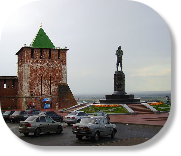
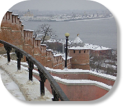
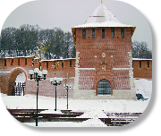
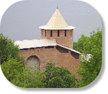
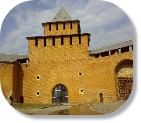
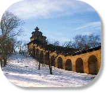
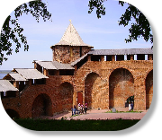
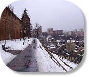
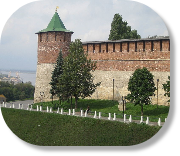
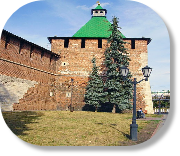
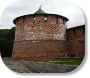
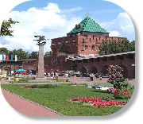
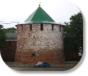